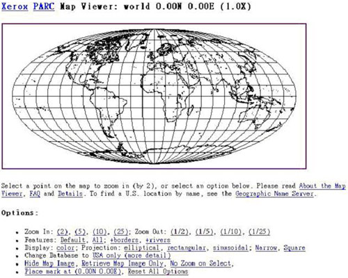
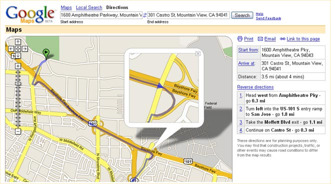
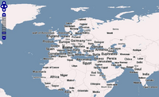

Leaflet.js
An Open-Source JavaScript Library for Mobile-Friendly Interactive Maps
Created by Brice McIver
History of web mapping
- 1993
- Xerox PARC Map Viewer
- 
History of web mapping
- 1996
- MapQuest

- 1998
- Terraserver USA

- 2004
- OpenStreetMap
- Feb 2005
- Google Maps
- 
- June 2005
- OpenLayers
- 

- First released in 2011
- Developed by Vladimir Agafonkin
- Used by Flickr, Foursquare, Pinterest, craigslist, GitHub
What can you create with Leaflet?
Windyty
In Flight
NYC Taxis
Other neat uses of Leaflet
Maps of the Year<html>
<head lang="en">
<title>Leaflet Demo</title>
<link rel="stylesheet" href="http://cdn.leafletjs.com/leaflet-0.7.3/leaflet.css" />
<script src="http://cdn.leafletjs.com/leaflet-0.7.3/leaflet.js"></script>
</head>
<body>
<div id="map" style="height: 600px"></div>
<script>
var osmUrl = 'http://{s}.tile.openstreetmap.org/{z}/{x}/{y}.png',
osmAttrib = '© <a href="http://openstreetmap.org/copyright">OpenStreetMap</a>
contributors',
osm = L.tileLayer(osmUrl, {maxZoom: 18, attribution: osmAttrib});
var map = L.map('map').setView([39.034672, -94.587095], 15).addLayer(osm);
L.marker([39.034672, -94.587095]).addTo(map);
</script>
</body>
</html>Markers
var myIcon = L.icon({
iconUrl: 'my-icon.png',
iconRetinaUrl: 'my-icon@2x.png',
iconSize: [38, 95], // size of the icon
iconAnchor: [22, 94], // point of the icon which will correspond to marker's location
popupAnchor: [-3, -76], // point from which the popup should open relative to the iconAnchor
shadowUrl: 'my-icon-shadow.png',
shadowRetinaUrl: 'my-icon-shadow@2x.png',
shadowSize: [68, 95], // size of the shadow
shadowAnchor: [22, 94] // point of the shadow which will correspond to marker's location
});Nicolas Mollet - https://mapicons.mapsmarker.com/
Popups
L.marker([39.034672, -94.587095]).addTo(map)
.bindPopup('South Plaza
' +
'816-561-5100
' +
'5105 Main Street
Kansas City, MO 64112')
.openPopup();Shapes
var deliveryArea = L.polygon([
[39.063267,-94.571687],
[38.991554,-94.575668],
[38.99328,-94.630396],
[39.025985,-94.630423],
[39.026252,-94.627748],
[39.027435,-94.627286],
[39.028952,-94.625849],
[39.032919,-94.625891],
[39.033536,-94.621235],
[39.052502,-94.621321],
[39.057201,-94.623038],
[39.061949,-94.625548],
[39.064881,-94.621772],
[39.064665,-94.613038]
]).addTo(map);
map.fitBounds(deliveryArea.getBounds());Geometry Types
- Polyline
- MultiPolyline
- Polygon
- MultiPolygon
- Rectangle
- Circle
deliveryArea.on('mouseover', function(e) {
e.target.setStyle({
color: '#666',
fillColor: 'yellow'
});
});
deliveryArea.on('mouseout', function(e) {
e.target.setStyle({
color: '#03f',
fillColor: '#03f'
});
});Styles
- stroke
- color
- weight
- opacity
- fill
- fillColor
- fillOpacity
- dashArray
- lineCap
- lineJoin
Events
- click
- dblclick
- mousedown
- mouseover
- mouseout
- contextmenu
- add
- remove
- popupopen
- popupclose
Tile Layer
URL template is a string of the following form:
http://{s}.somedomain.com/blabla/{z}/{x}/{y}.png{s}— one of the available subdomains{z}— zoom level{x}and{y}— tile coordinates
You can use custom keys in the template like this:
L.tileLayer('http://{s}.somedomain.com/{foo}/{z}/{x}/{y}.png',
{foo: 'bar'});Example Tile Providers
MapQuest
http://developer.mapquest.com/web/products/open/map
var mqSubdomains = [
'otile1','otile2', 'otile3', 'otile4' ];
var mqTileUrlPrefix = window.location.protocol !== 'https:' ? 'http://{s}' : 'https://{s}-s';
// OSM Tiles attribution
var osmTileAttr = 'Map data © OpenStreetMap contributors, Tiles Courtesy of MapQuest';
var osmMapOpt = {attribution: osmTileAttr,
maxNativeZoom: 18,
maxZoom: 21,
subdomains: mqSubdomains};
L.tileLayer(mqTileUrlPrefix+'.mqcdn.com/tiles/1.0.0/map/{z}/{x}/{y}.jpg',osmMapOpt);
// Open Aerial Tiles attribution
var oaTileAttr = 'Portions Courtesy NASA/JPL-Caltech and U.S. Depart. of Agriculture, ' +
'Farm Service Agency, Tiles Courtesy of MapQuest';
var oaMapOpt = {attribution: oaTileAttr,
maxNativeZoom: 18,
maxZoom: 21,
subdomains: mqSubdomains};
L.tileLayer(mqTileUrlPrefix+'/tiles/1.0.0/sat/{z}/{x}/{y}.jpg',oaMapOpt);CartoDB
http://cartodb.com/basemaps/
var httpPrefix = 'http://{s}.basemaps.cartocdn.com';
var httpsPrefix = 'https://cartodb-basemaps-{s}.global.ssl.fastly.net';
var cdbTileUrlPrefix = window.location.protocol !== 'https:' ? httpPrefix : httpsPrefix;
var cdbMapOpt = {attribution: '© OpenStreetMap contributors, © CartoDB'};
L.tileLayer(cdbTileUrlPrefix+'/<version>/{z}/{x}/{y}.png',cdbMapOpt);- Positron - light_all
- Positron (no labels) - light_nolabels
- Dark Matter - dark_all
- Dark Matter (no labels) - dark_nolabels
ESRI
http://server.arcgisonline.com/ArcGIS/rest/services
- Streets
- Topographic
- National Geographic
- Imagery
- Shaded Relief
- Terrain
Stamen Design
http://maps.stamen.com
- Toner
- Terrain
- Watercolor
Mapbox
https://www.mapbox.com/developers/api/maps/
- Requires an API key
- Free up to 50,000 views / month
Plugins by Pabel Shramov
https://github.com/shramov/leaflet-plugins
- Bing
- Yandex
GeoJSON
GeoJSON is a format for encoding a variety of geographic data structures. A GeoJSON object may represent a geometry, a feature, or a collection of features. GeoJSON supports the following geometry types: Point, LineString, Polygon, MultiPoint, MultiLineString, MultiPolygon, and GeometryCollection. Features in GeoJSON contain a geometry object and additional properties, and a feature collection represents a list of features.
{
"type": "Feature",
"geometry": {
"type": "Point",
"coordinates": [125.6, 10.1]
},
"properties": {
"name": "Dinagat Islands"
}
}style
var myLines = [
{
"type": "LineString",
"coordinates": [[-100, 40], [-105, 45], [-110, 55]]
}, {
"type": "LineString",
"coordinates": [[-105, 40], [-110, 45], [-115, 55]]
}
];
var myStyle = {
"color": "#ff7800",
"weight": 5,
"opacity": 0.65
};
L.geoJson(myLines, { style: myStyle }).addTo(map);var states = [{
"type": "Feature",
"properties": {"party": "Republican"},
"geometry": {
"type": "Polygon",
"coordinates": [[
[-104.05, 48.99],
[-97.22, 48.98],
[-96.58, 45.94],
[-104.03, 45.94],
[-104.05, 48.99]
]]
}
}, {
"type": "Feature",
"properties": {"party": "Democrat"},
"geometry": {
"type": "Polygon",
"coordinates": [[
[-109.05, 41.00],
[-102.06, 40.99],
[-102.03, 36.99],
[-109.04, 36.99],
[-109.05, 41.00]
]]
}
}];
L.geoJson(states, {
style: function(feature) {
switch (feature.properties.party) {
case 'Republican': return {color: "red"};
case 'Democrat': return {color: "blue"};
}
}
}).addTo(map);pointToLayer
var geojsonMarkerOptions = {
radius: 8,
fillColor: "#ff7800",
color: "#000",
weight: 1,
opacity: 1,
fillOpacity: 0.8
};
L.geoJson(someGeojsonFeature, {
pointToLayer: function (feature, latlng) {
return L.circleMarker(latlng, geojsonMarkerOptions);
}
}).addTo(map);onEachFeature
function onEachFeature(feature, layer) {
// does this feature have a property named popupContent?
if (feature.properties && feature.properties.popupContent) {
layer.bindPopup(feature.properties.popupContent);
}
}
var geojsonFeature = {
"type": "Feature",
"properties": {
"name": "Coors Field",
"amenity": "Baseball Stadium",
"popupContent": "This is where the Rockies play!"
},
"geometry": {
"type": "Point",
"coordinates": [-104.99404, 39.75621]
}
};
L.geoJson(geojsonFeature, {
onEachFeature: onEachFeature
}).addTo(map);filter
var someFeatures = [{
"type": "Feature",
"properties": {
"name": "Coors Field",
"show_on_map": true
},
"geometry": {
"type": "Point",
"coordinates": [-104.99404, 39.75621]
}
}, {
"type": "Feature",
"properties": {
"name": "Busch Field",
"show_on_map": false
},
"geometry": {
"type": "Point",
"coordinates": [-104.98404, 39.74621]
}
}];
L.geoJson(someFeatures, {
filter: function(feature, layer) {
return feature.properties.show_on_map;
}
}).addTo(map);Point
Point coordinates are in x, y order (easting, northing for projected coordinates, longitude, latitude for geographic coordinates)
{
"type": "Point",
"coordinates": [100.0, 0.0]
}LineString
Coordinates of LineString are an array of positions
{
"type": "LineString",
"coordinates": [ [100.0, 0.0], [101.0, 1.0] ]
}Polygon
Coordinates of a Polygon are an array of LinearRing coordinate arrays. The first element in the array represents the exterior ring. Any subsequent elements represent interior rings (or holes).
No holes
{ "type": "Polygon",
"coordinates": [
[ [100.0, 0.0], [101.0, 0.0], [101.0, 1.0], [100.0, 1.0], [100.0, 0.0] ]
]
}With holes
{ "type": "Polygon",
"coordinates": [
[ [100.0, 0.0], [101.0, 0.0], [101.0, 1.0], [100.0, 1.0], [100.0, 0.0] ],
[ [100.2, 0.2], [100.8, 0.2], [100.8, 0.8], [100.2, 0.8], [100.2, 0.2] ]
]
}MultiPoint
Coordinates of a MultiPoint are an array of positions
{ "type": "MultiPoint",
"coordinates": [ [100.0, 0.0], [101.0, 1.0] ]
}MultiLineString
Coordinates of a MultiLineString are an array of LineString coordinate arrays:
{ "type": "MultiLineString",
"coordinates": [
[ [100.0, 0.0], [101.0, 1.0] ],
[ [102.0, 2.0], [103.0, 3.0] ]
]
}MultiPolygon
Coordinates of a MultiPolygon are an array of Polygon coordinate arrays
{
"type": "MultiPolygon",
"coordinates": [
[[[102.0, 2.0], [103.0, 2.0], [103.0, 3.0], [102.0, 3.0], [102.0, 2.0]]],
[[[100.0, 0.0], [101.0, 0.0], [101.0, 1.0], [100.0, 1.0], [100.0, 0.0]],
[[100.2, 0.2], [100.8, 0.2], [100.8, 0.8], [100.2, 0.8], [100.2, 0.2]]]
]
}GeometryCollection
Each element in the geometries array of a GeometryCollection is one of the geometry objects described above
{
"type": "GeometryCollection",
"geometries": [
{
"type": "Point",
"coordinates": [100.0, 0.0]
}, {
"type": "LineString",
"coordinates": [ [101.0, 0.0], [102.0, 1.0] ]
}
]
}Making geojson
Leaflet Plugins
Questions?
Brice McIver
- @bricemciver
- bricemciver on Github
- bmciver@keyholesoftware.com
Entire presentation with code samples available on Github.
leaflet-demo - https://bricemciver.github.io/leaflet-demo leaflet-demo source - https://github.com/bricemciver/leaflet-demo/tree/gh-pages